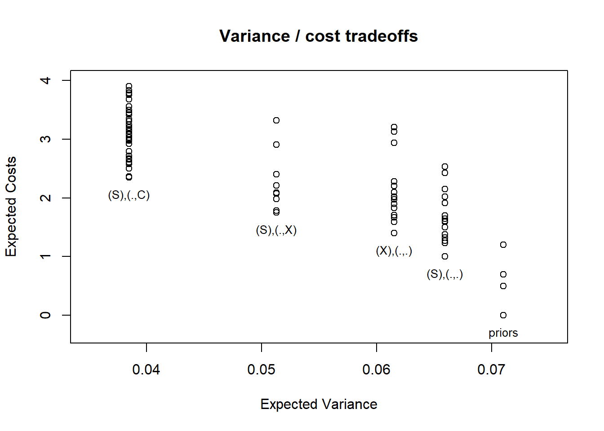

Chapter 12 Clue Selection as a Decision Problem
We draw out the implications of the causal model approach for clue-selection strategies. We demonstrate procedures for assessing which clues minimize expected variance and how to construct an optimal decision tree for determining a clue gathering strategy.
We now mobilize the causal models framework for the purposes of making research-design choices. We start with the problem of clue-selection: determining which qualitative data to gather on a case. Evidently it makes sense to gather clues that have large probative value, but whether or not a given clue will have probative value depends on the model we are working with and the question we are asking. As we will also see, a clue’s informativeness can depend on what other clues have already been collected. Finding out that the butler had no motive may be informative for the claim that he is innocent, but it may not be useful if we already know that he had no opportunity.
We have already provided some insight into the problem in Chapter 7, where we showed how relations of \(d-\)connection can tell us when a clue is possibly informative about a query. In this chapter, we go further to show how we can use our causal model to figure out which clues and clue-selection strategies are likely to be most informative about the query we seek to address.
12.1 A model-informed approach to clue-selection
The representation of inference problems as one of querying a Bayesian model points to a relatively simple method for selecting the most informative clues for collection. Consider, first, a situation in which one can invest in collecting various forms of evidence on a case and wants to know the expected probative value of all possible collections of evidence that one could gather.
We can assess alternative strategies through the following procedure:
- Define the model.
- Define a query on the model.
- Define a data strategy: a set of clues for which one might search (e.g., observe the value of \(Y\)).
- Given prior data, figure out the probability of different realizations of the new data.
- For each possible realization, calculate the posterior variance.
- Calculate the expected posterior variance for the data strategy by taking a weighted average of the variances arising from the different data realizations, with weights given by the probability of observing the data-realization in question.
- Repeat steps 3-4 for different data strategies that we wish to compare.
This procedure then allows us to choose the clue strategy with the lowest expected posterior variance.
A still more sophisticated strategy would, for multiple clues, take sequence into account: it would tell us which clues to search for later in the process given the realization of clues sought earlier. The path-dependence of clue selection arises from the possibility that the informativeness of a clue may depend on the value of other nodes in the model. A given clue \(K_2\), for instance, may be informative if another clue \(K_1\) has the value of 1 but not if it has the value 0.
We provide tools for both of these approaches and illustrate them below for both the running example and the democracy application.
12.1.1 Clue selection with a simple example
We first spell out how this works using a hypothetical example and then explore further using our democratization model.
Consider a model of government survival in office in which retaining office depends on not being perceived as corrupt by the public, graphed in Figure 12.1. We take two conditions as being exogenous in this model. First, a country may or may not have a free press (\(X\)). Second, the country’s government may or may not be sensitive to public opinion (\(S\)).67 In terms of causal relations, we then allow that the government’s decision about whether to engage in corruption (\(C=1\)) may depend on whether the government is sensitive to public opinion and whether there is a free press (that might reveal that corruption). Moreover, we allow that whether the press will report on the corruption (\(R=1\)) may depend on whether there is government corruption and whether the press is free. Finally, whether the government will be removed from office (\(Y=1\)) may depend on whether it has acted corruptly and whether this gets reported in the press.

Figure 12.1: The figure shows a simple causal model. \(S\) and \(X\) are stochastic, \(C\) and \(R\) have only two possible nodal types each, \(Y=1\) if and only if \(C\) and \(R\) are both 1.
To simplify the illustration we work with a highly restricted version of this model. At node \(C\), we allow only two types: either corruption is always present (\(\theta^C_{1111}\)) or corruption is always present except when there is both a free press (\(X=1\)) and sensitivity to public opinion (\(S=1\)) (\(\theta^C_{1110}\)). At \(R\), we allow only for \(\theta^R_{0001}\) and \(\theta^R_{0000}\): the possibility that there is reporting on corruption if and only if there is corruption and a free press, and the possibility that there is never reporting on corruption. Finally, at \(Y\), we restrict to just one nodal type, \(\theta^Y_{0001}\): the government will remain in office unless there is both corruption (\(C=1\)) and reporting on corruption (\(R=1\)).
To summarize the intuition, then, governments will fall only if there is both corruption and reporting on corruption. We are uncertain whether or not corruption is always present; but if corruption is ever absent, it can only be because there exists both a free press and a government that cares about public opinion. We are also uncertain whether or not media reporting on corruption is always absent; but if it is ever present, it can only be because there is both corruption and a free press. One implication is that governments that are sensitive to public opinion will never fall because they will always eschew corruption when a free press—the only mechanism that can generate reporting on corruption—is present. In turn, the presence of a free press can only matter for government survival if governments are not sensitive and thus do not strategically adjust their behavior in response to the risk of reporting.
Suppose now that our query is whether \(X\) has a positive effect on \(Y\). Using this model we can ask how likely different data realizations are and what we would infer about our query from each possible data realization, given existing data. We illustrate for a situation in which we already know that \(Y=0\).
Application of the function conditional_inferences produces a matrix with the results. We reproduce these as Table 12.1. The first five columns of Table 12.1 define the data realizations. The matrix includes all combinations of possible realized values for all available clue strategies given that we have already observed \(Y=0\). Note that since we can already infer that \(R=0\) we omit strategies that seek data on \(R\). A “0” or “1” represents the observed value for a node that we have chosen to observe while “?” indicates that a node is not observed under the given strategy. Thus, for instance, in the first 5 rows we are collecting data on all nodes. In the next three rows, we have sought data on all nodes except \(S\).
We also indicate the probability of each realization given the srtategy, the inference we would make from each data-realization—that is, the posterior probability that \(X\) has a positive effect on \(Y\), given that \(Y=0\)—and the posterior variance.
The figures show all combinations of possible realized values for all available clue strategies given that we have already observed \(Y=0\). A “0” or “1” represents the observed value for a node that we have chosen to observe while \(?\) under a node indicates that that node is not observed under the given strategy.
| strategy | S | X | C | R | Y | prob | posterior | variance |
|---|---|---|---|---|---|---|---|---|
| SXC | 1 | 1 | 0 | 0 | 0 | 0.154 | 0.000 | 0.000 |
| SXC | 0 | 0 | 1 | 0 | 0 | 0.308 | 0.500 | 0.250 |
| SXC | 1 | 0 | 1 | 0 | 0 | 0.308 | 0.250 | 0.188 |
| SXC | 0 | 1 | 1 | 0 | 0 | 0.154 | 0.000 | 0.000 |
| SXC | 1 | 1 | 1 | 0 | 0 | 0.077 | 0.000 | 0.000 |
| XC | ? | 1 | 0 | 0 | 0 | 0.154 | 0.000 | 0.000 |
| XC | ? | 0 | 1 | 0 | 0 | 0.615 | 0.375 | 0.234 |
| XC | ? | 1 | 1 | 0 | 0 | 0.231 | 0.000 | 0.000 |
| SC | 1 | ? | 0 | 0 | 0 | 0.154 | 0.000 | 0.000 |
| SC | 0 | ? | 1 | 0 | 0 | 0.462 | 0.333 | 0.222 |
| SC | 1 | ? | 1 | 0 | 0 | 0.385 | 0.200 | 0.160 |
| SX | 0 | 0 | ? | 0 | 0 | 0.308 | 0.500 | 0.250 |
| SX | 1 | 0 | ? | 0 | 0 | 0.308 | 0.250 | 0.188 |
| SX | 0 | 1 | ? | 0 | 0 | 0.154 | 0.000 | 0.000 |
| SX | 1 | 1 | ? | 0 | 0 | 0.231 | 0.000 | 0.000 |
| C | ? | ? | 0 | 0 | 0 | 0.154 | 0.000 | 0.000 |
| C | ? | ? | 1 | 0 | 0 | 0.846 | 0.273 | 0.198 |
| X | ? | 0 | ? | 0 | 0 | 0.615 | 0.375 | 0.234 |
| X | ? | 1 | ? | 0 | 0 | 0.385 | 0.000 | 0.000 |
| S | 0 | ? | ? | 0 | 0 | 0.462 | 0.333 | 0.222 |
| S | 1 | ? | ? | 0 | 0 | 0.538 | 0.143 | 0.122 |
| Prior | ? | ? | ? | 0 | 0 | 1.000 | 0.231 | 0.178 |
Figures 12.2 and 12.3 show the same information in graphs.
Figure 12.2: The probability of different data patterns under different data strategies and posterior beliefs in each case.
Figure 12.3: The probability of different data patterns under different data strategies and posterior variance in each case.
Each inference, under each data-realization, also has an associated posterior variance, or level of uncertainty. Thus, given the probability of each data-realization conditional on a given clue strategy, it is easy to assess the expected posterior variance from a given clue strategy. We present these expected posterior variances for all possible clue strategies, given the prior observation of \(Y\), in Table 12.2.
| Strategy | Given | Prior belief | Prior Uncertainty | Expected Posterior Uncertainty |
|---|---|---|---|---|
| X | Y==0 | 0.231 | 0.178 | 0.144 |
| S | Y==0 | 0.231 | 0.178 | 0.168 |
| C | Y==0 | 0.231 | 0.178 | 0.168 |
| R | Y==0 | 0.231 | 0.178 | 0.178 |
| X, S | Y==0 | 0.231 | 0.178 | 0.135 |
| X, C | Y==0 | 0.231 | 0.178 | 0.144 |
| C, S | Y==0 | 0.231 | 0.178 | 0.164 |
| X, C, S | Y==0 | 0.231 | 0.178 | 0.135 |
We operationalize higher levels of expected learning from a strategy as a greater expected reduction in variance upon observing the data. We can see a couple of patterns here.
By far the biggest gains in learning come from observing \(X\). We can see this most readily by comparing the 1-clue strategies to one another. But in general, any strategy that includes observing \(X\) always does substantially better than the comparable strategy that excludes \(X\). The intuition here is fairly straightforward: if we want to know whether \(Y=0\) was caused by \(X=0\), and start out very uncertain about \(X\)’s value, we should expect to learn a good deal from figuring out whether \(X\) is in fact equal to \(0\).
There are also considerable gains from observing \(S\) or \(C\) by themselves. Consider, first, why observing \(S\) is informative. \(S\) is potentially informative because it tells us something about whether \(X\) can affect \(Y\) by affecting \(R\). Remember that a government is removed only if there is both corruption (\(C=1\)) and reporting on corruption (\(R=1\)). Moreover, there is only reporting on corruption (if ever) if \(C=1\). Thus, for both of these reasons, \(X\) can only have a positive effect on government removal (by causing reporting on corruption) if \(C=1\): i.e., if there is corruption. And \(S\) tells us something about what \(C\)’s value is likely to be if \(X\) were set to 1.
Specifically, if we observe \(S=0\), then we know for sure that \(C=1\), regardless of \(X\), since \(C\) is always 1 when \(S=0\) under both permitted nodal types for \(C\). If \(S=1\), on the other hand, there’s a lower chance that \(C\) would be equal to 1 if \(X\) were set to 1: in one of \(C\)’s permitted nodal types, there is always corruption; but in the other type, sensitive governments avoid corruption when there is a free press, so \(X\) moving to 1 would give us \(C=0\). We have put equal prior probabilities on these two nodal types. Thus, if we observe \(S=1\), we conclude that there is a lower probability that \(C\) will take on the value necessary for \(X\) to exert a positive effect on \(Y\) than if we observe \(S=0\).
Why, then, is \(C\) informative? If we observe \(C=0\), then we know that \(X\) must be equal to 1 since, under permitted nodal types for \(C\), there is an absence of corruption only in the presence of a free press and sensitive governments. And if \(X=1\) with \(Y=0\), a positive effect is ruled out with certainty. If we observe \(C=1\), then there remains some possibility that \(X=0\) as well as some possibility \(C\) would remain at 1 if \(X\) were set to 1 (depending on \(C\)’s unknown nodal type), allowing \(X\) to yield a positive effect on \(Y\) through \(R\).
There are no gains from observing \(R\) if \(Y=0\). We can see why by looking at our table of data possibilities consistent with \(Y=0\) (Table 12.1). As we can see, there is no possibility of observing anything other than \(R=0\) if we have already seen \(Y=0\). We can see why by thinking, jointly, about how \(Y\) is determined and how \(R\) is determined. \(Y\) can be 0 either because \(C=0\) or \(R=0\). So if \(R\) were equal to \(1\), this must mean that \(C\) was \(0\). However, a necessary condition for \(R\) to be 1, under \(R\)’s permitted nodal types, is \(C=1\) and \(X=1\). In other words, the condition under which \(R\) could be 1 is a condition under which \(Y\) would not be 0. Thus, if we already know \(Y=0\), we know \(R=0\), and there is no gain from actually looking for \(R\).
Once we decide to observe \(X\), then the next-most informative clue to add to our research design is \(S\): \(X, S\) has the lowest expected posterior variance of any of the 2-clue strategies. And, in fact, there are no gains to adding \(C\) to \(X\), relative to observing \(X\) by itself.
Let us develop the intuition underlying this result.
Imagine that we have already observed \(X\)’s value. If \(X=1\), then (given \(Y=0\)), a positive effect is immediately ruled out with certainty, rendering any further observations of no value. If we observe \(X=0\), however, then (under this causal model) we know for certain that \(C=1\), simply because \(C=1\) for both of \(C\)’s permitted nodal types when \(X=0\) (there is always corruption when there is no free press). Thus, there is nothing to be gained by observing \(C\). (We have already seen why there is nothing to be gained from observing \(R\).)
Why, we might still ask, are there possible gains to observing \(S\) even if we’re going to observe \(X\)? \(S\) is informative because it tells us something about whether \(X\) can affect \(Y\) by affecting \(R\). The potential gains from observing \(S\) with \(X\) arise from the possibility that we may see \(X=0\) (since \(X=1\) woudl decide the matter by itself). If \(X=0\), then we still need to know whether \(Y\) would be 1 if we changed \(X\) to 1. As discussed above, that depends on whether \(C\) would be \(1\) if \(X\) were set to 1, and (as, again, explained above) \(S\) is informative on that matter.
We see, further, in the table—and it follows from the above logic—that we cannot improve on an \(X, S\) strategy by gathering more data. Thus, if the search for information is costly, looking only for \(X\) and \(S\) dominates all 3- and 4-clue strategies.
Clues can be more informative jointly than separately, and the expected gains to observing one clue can depend on which other clues we plan to observe. To see this, notice that among the 1-clue strategies, observing \(C\) by itself is slightly more informative than observing \(S\) by itself. However, if we are planning to observe \(X\), then the gains flip, and it is only \(S\) that offers additional useful information. As we have discussed, observing \(X\) makes observing \(C\) uninformative while \(S\) remains informative as a moderator of \(X\)’s effect.
We would add that the pattern here forms part of a broader point that we wish to emphasize in this chapter: while process tracing often focuses on examining steps along causal pathways, it will often be the case that we learn more from moderators, like \(S\) in this model, than from mediators, like \(C\) and \(R\). We return to this point below.
12.1.2 Dependence on prior beliefs
As the foregoing discussion already suggests, optimal clue strategies can depend on our prior beliefs about causal relationships among the variables in the model. We illustrate this point here, examining how evaluation of clue strategies shift as we relax restrictions on nodal types and set informative priors over nodal types.
Relaxing restrictions. In the analysis above, we allowed for just two (of 16 possible) nodal types at both \(C\) and \(R\), effectively expressing strong beliefs about how \(C\)’s and \(R\)’s values are determined. But what if we are less certain than this?
Suppose that we are not sure that corruption can be prevented only through a combination of a free press and government sensitivity. We think it possible that government sensitivity itself might be sufficient: that \(S\) might have a negative effect on \(C\) regardless of \(X\)’s value. (Perhaps, for instance, there are means other than via a free press through which the public might learn of government corruption.) We allow for this causal possibility by expanding the set of kept nodal types for \(C\) to include \(\theta^C_{1010}\) in defining the model.
| Strategy | Given | Prior belief | Prior Uncertainty | Expected Posterior Uncertainty |
|---|---|---|---|---|
| X | Y==0 | 0.2 | 0.16 | 0.133 |
| S | Y==0 | 0.2 | 0.16 | 0.145 |
| C | Y==0 | 0.2 | 0.16 | 0.143 |
| R | Y==0 | 0.2 | 0.16 | 0.160 |
| X, S | Y==0 | 0.2 | 0.16 | 0.117 |
| X, C | Y==0 | 0.2 | 0.16 | 0.120 |
| C, S | Y==0 | 0.2 | 0.16 | 0.140 |
| X, C, S | Y==0 | 0.2 | 0.16 | 0.113 |
The diagnosis of strategies under this adjusted set of beliefs, for the same query (whether \(X\) has a positive effect on \(Y\)) and prior data (\(Y=0\)) as before, are displayed in Table 12.3.
We see that, among 1-clue strategies, observing \(X\) is still the best choice. The best 2-clue strategy is also still \(X, S\). Where things change most significantly, however, is among 3-clue strategies: now, we can do even better by additionally observing \(C\). The reason is that, with greater uncertainty about its nodal types, \(C\)’s value is no longer known when \(X=0\): it is now possible that \(C=0\) when \(X=0\) since we think it possible that \(C\)’s nodal type is \(\theta^C_{1010}\). Since \(C\)’s value bears on whether \(X\) can have an effect via \(R\), we can thus in this situation potentially learn something by observing \(C\).
We can also see \(C\)’s enhanced informational value throughout the table. Among 1-clue strategies, observing \(C\) alone generates greater learning here than it does under the original setup. More strikingly, among 2-clue strategies we see that observing \(C\) can now generate learning even if we have already observed \(X\) (whereas there was no gain from strategy \(X, C\) relative to \(X\) under the original model). While \(X, S\) is still a better strategy than \(X, C\), the change in diagnosis could matter if, for instance, we cannot observe \(S\) for some reason or if observing \(S\) is much more costly than observing \(C\).
Moreover, the expected variance reduction from observing \(S\) is also greater under the new model, for 1- and 2-clue strategies. To see the informal intuition here, note that \(S\) is potentially informative about \(C\)’s value as a parent of \(C\). And we now believe (with the added nodal type for \(C\)) that there may be an additional way in which \(S\) could matter for \(C\), and thus provide information about its value. Moreover, since the added nodal type has \(S\) exerting a negative effect on \(C\) regardless of \(X\)’s value, \(S\) can now be informative even if we have already observed \(X=0\).
Finally, we can see that nothing has changed in regard to \(R\), about whose nodal types we have retained the same beliefs. It is still uniformly unprofitable to observe \(R\) because we still know \(R\)’s value whenever \(X=0\).
This exercise also suggests a further interesting principle of clue-selection: that potential informativeness rests on uncertainty about what we will find.
Changing priors. We can also see what happens when, rather than permitting new nodal types, we have informative beliefs about the prevalence of permitted types. We can provide a simple demonstration by expressing stronger prior beliefs about \(S\)’s nodal type. Suppose we believe most governments to be sensitive to public opinion. This would imply that we should put greater prior weight on \(\theta^S_1\) than on \(\theta^S_0\).
These priors put a 90% probability on \(S=1\).
| Strategy | Given | Prior belief | Prior Uncertainty | Expected Posterior Uncertainty |
|---|---|---|---|---|
| X | Y==0 | 0.111 | 0.099 | 0.089 |
| S | Y==0 | 0.111 | 0.099 | 0.094 |
| C | Y==0 | 0.111 | 0.099 | 0.086 |
| R | Y==0 | 0.111 | 0.099 | 0.099 |
| X, S | Y==0 | 0.111 | 0.099 | 0.083 |
| X, C | Y==0 | 0.111 | 0.099 | 0.079 |
| C, S | Y==0 | 0.111 | 0.099 | 0.085 |
| X, C, S | Y==0 | 0.111 | 0.099 | 0.076 |
We see the results of this new set of diagnoses, with informative priors on \(S\)’s nodal types, in Table 12.4. Comparing with Table 12.2, a number of features stand out. First is the much lower prior variance under the new model: having a strong prior belief about \(S\)’s value gives us stronger prior beliefs about whether \(X\) could have caused \(Y\) since such an effect depends on \(S\)’s value. A second striking difference is that searching for \(S\) is expected to be much less informative in this model. The reason is simple: we now have a strong prior belief about what we are likely to find when we search for \(S\). We could be surprised, but we should not expect to be. In the original model, in contrast, we were maximally uncertain about \(S\)’s value—believing it had a 0.5 chance of being 1—and so there was much more to be gained by looking.
While not shown here, we get essentially the same result if we flip our priors and put much greater weight on \(S=0\), rather than on \(S=1\).
12.1.3 Clue selection for the democratization model
We now apply this approach to the model of democratization that we worked with in Chapters 8 and 10.
We start by specifying the democratization model, with negative effects ruled out for \(I \rightarrow M\), \(M \rightarrow D\), and \(P \rightarrow D\) and a positive direct effect ruled out for \(I \rightarrow D\).
Now, let us assume that we have already observed high inequality and the outcome of democratization in a case, and we want to know whether high inequality caused democratization. The decision we confront is what combination of the other variables—mobilization or international pressure—we should collect data on: we could observe nothing further; observe \(P\) only; observe \(M\) only; or observe both \(P\) and \(M\). In Table 12.5, we show all possible data realizations from all possible clue-selection strategies, the inferences we would draw from each realization, and the probability of that realization (not conditioning on \(I=D=1\).)
| I | P | M | D | posterior | prob |
|---|---|---|---|---|---|
| 1 | 0 | 0 | 1 | 0.000 | 0.004 |
| 1 | 1 | 0 | 1 | 0.000 | 0.025 |
| 1 | 0 | 1 | 1 | 0.250 | 0.050 |
| 1 | 1 | 1 | 1 | 0.107 | 0.117 |
| 1 | 0 | 1 | 0.000 | 0.029 | |
| 1 | 1 | 1 | 0.150 | 0.167 | |
| 1 | 0 | 1 | 0.231 | 0.054 | |
| 1 | 1 | 1 | 0.088 | 0.142 | |
| 1 | 1 | 0.128 | 0.196 |
We show in Table 12.6 how we expect uncertainty to be reduced by different research designs. In this table, we show these reductions for the two kinds of cases in which democratization does occur. The first row displays the variance on our posterior belief about the effect of \(I\) on \(D\) before we observe anything at all. The next three rows show our expectations for looking for \(P\) only; looking for \(M\) only; and looking for both. The clearest message here is that, if we had to choose between clues, we should observe \(P\): given our model (including our priors on the types), we reduce our uncertainty more by learning about an alternative cause than by learning about a mediator.
We also see that the mediator is much more informative when the causal effect we are looking for is one that could have operated via the mediator, as compared to when the mediator is informative only as a moderator of the cause’s direct effects.
| strategy | given | prior_estimand | prior_var | E_post_var |
|---|---|---|---|---|
| None | I==1 & D==1 | 0.128 | 0.111 | 0.111 |
| P | I==1 & D==1 | 0.128 | 0.111 | 0.107 |
| M | I==1 & D==1 | 0.128 | 0.111 | 0.109 |
| P and M | I==1 & D==1 | 0.128 | 0.111 | 0.105 |
We turn next to considering those cases with low inequality that democratized, asking whether democratization occurred because of a negative effect of inequality. The possible data realizations, resulting inferences, and data probabilities are shown in Table 12.7, while the expected learning estimates for each clue strategy are given in Table 12.8. The pattern here is similar, though somewhat starker: substantially greater gains to observing the moderator, \(P\), than the mediator \(M\). The gains to observing \(M\) here are very small indeed. We can already see from comparing the relevant rows in the data-possibilities table how little our posterior beliefs shift depending on \(M\)’s realized value. \(M\) is far less informative for assessing \(I\)’s causal effect for an \(I=0, D=1\) case than for a \(I=1, D=1\) case. The reason is that, in the former situation, we are looking for a positive effect while in the latter situation, we are looking for a negative effects; but only positive effects can operate through the mobilization pathway under the model restrictions. Thus, \(M\) is uninformative as a mediator of \(I\)’s effect in an \(I=0, D=1\) (though it is informative as a moderator for such a case, but less so).
| I | P | M | D | posterior | prob |
|---|---|---|---|---|---|
| 0 | 0 | 0 | 1 | 0.667 | 0.050 |
| 0 | 1 | 0 | 1 | 0.393 | 0.117 |
| 0 | 0 | 1 | 1 | 0.571 | 0.058 |
| 0 | 1 | 1 | 1 | 0.263 | 0.079 |
| 0 | 0 | 1 | 0.475 | 0.167 | |
| 0 | 1 | 1 | 0.394 | 0.138 | |
| 0 | 0 | 1 | 0.615 | 0.108 | |
| 0 | 1 | 1 | 0.340 | 0.196 | |
| 0 | 1 | 0.438 | 0.304 |
| strategy | given | prior_estimand | prior_var | E_post_var |
|---|---|---|---|---|
| None | I==0 & D==1 | 0.438 | 0.246 | 0.246 |
| P | I==0 & D==1 | 0.438 | 0.246 | 0.229 |
| M | I==0 & D==1 | 0.438 | 0.246 | 0.245 |
| P and M | I==0 & D==1 | 0.438 | 0.246 | 0.225 |
Now, let us see what happens as we revise the model, making it less restrictive. We do this, first, by allowing for confounding between two nodes in the model, international pressure and democratization. In particular, we allow for the possibility that, in order to generate a perception of foreign-policy influence and success, other states may target democratization pressure on autocratic regimes that are likely to democratize in the presence of pressure. This includes regimes that will democratize only if pressured as well as those that will democratize in the presence of pressure but where pressure itself was not a cause. We use the set_confound function to define distinct parameters for \(P\)’s nodal type when this is the case. The confound condition here is extremely easy to define: it is simply all unit types in which \(D=1\) when \(P=1\) ((D[P=1] == 1)). This includes all unit types (combinations of nodal types) that generate democratization in the presence of international pressure.
Having set the confound condition, we can then express beliefs (parameter values) that \(P=1\) is more common relative to \(P=0\) when the condition is met than otherwise.68 We keep all other parameter values flat across the nodal types that are not excluded.
| I | P | M | D | posterior | prob |
|---|---|---|---|---|---|
| 1 | 0 | 0 | 1 | 0.0000 | 0.0083 |
| 1 | 1 | 0 | 1 | 0.0000 | 0.0500 |
| 1 | 0 | 1 | 1 | 0.2500 | 0.1000 |
| 1 | 1 | 1 | 1 | 0.1071 | 0.2333 |
| 1 | 0 | 1 | 0.0000 | 0.0583 | |
| 1 | 1 | 1 | 0.1500 | 0.3333 | |
| 1 | 0 | 1 | 0.2308 | 0.1083 | |
| 1 | 1 | 1 | 0.0882 | 0.2833 | |
| 1 | 1 | 0.1277 | 0.3917 |
| strategy | given | prior_estimand | prior_var | E_post_var |
|---|---|---|---|---|
| None | I==1 & D==1 | 0.1277 | 0.1114 | 0.1114 |
| P | I==1 & D==1 | 0.1277 | 0.1114 | 0.1073 |
| M | I==1 & D==1 | 0.1277 | 0.1114 | 0.1085 |
| P and M | I==1 & D==1 | 0.1277 | 0.1114 | 0.1049 |
We display the inferences we would draw from different clue strategies and data realizations in Table 12.9; and we show the resulting diagnoses of clue strategies, for the situation in which we have already observed \(I=1\) and \(D=1\), in Table 12.10. As we can see from the latter table, the presence of a confound involving \(P\) reduces this clue’s relative expected contribution to learning, making it now less informative in expectation than \(M\).
Working backwards, we can readily identify the reason for this in Table 12.9. We see here that observing \(P=1\) moves our beliefs very little off of our prior of \(0.091\) because, given the confounding, we already strongly expect to see \(P=1\) in a case that democratized; actually observing \(P=1\) contains only a small amount of new information. Our beliefs over the query change a great deal if we observe \(P=0\), since the absence of pressure makes it much more likely that democratization occurred because of high inequality. In fact, \(P\)’s value is far more consequential than \(M\)’s. However, we can also see from the last column of the table that the most impactful realization of \(P\)’s value is also extremely unlikely under the model (given \(I=D=1\)). Thus, \(P\) can be highly informative under this model, but it is very unlikely to be.
We turn next to examining clue strategies for a different kind of query. So far we have concerned ourselves with queries about causal effects, but we now examine a query in which we care about the pathway through which an effect occurs. We need to adjust the model to allow for multiple pathways since, under the restrictions we have been using so far, positive effects of inequality can run only indirectly and negative effects can only run directly. We now remove the restriction that excluded a negative effect of \(I\) on \(M\) and instead specify a prior belief that such a negative effect is less likely than \(M\)’s other nodal types.
To isolate how the query matters from how the restrictions matter, we first diagnose clue strategies for a causal-effect query under this new model: given \(I=0, D=1\), did \(I\) have a negative effect on \(D\)? Inferences conditional on data-realizations and clue strategies are displayed in Table 12.11 and expected posterior variances in Table 12.12.
Starting with Table 12.11, a comparison with the parallel results for the model that excludes negative \(I \rightarrow M\) effects – Table 12.7 – is informative. Similar to what we saw in Chapter 8, the inferences we draw from observing \(M\)’s values flip in direction when we allow for negative effects of \(I\) on \(M\). When such effects were excluded, \(M\) was informative only as a moderator of \(I\)’s direct negative effect on \(D\). An observation of \(M=1\) counted as evidence against \(I=0\) being the cause of \(D=1\) since \(M=1\) could be the cause (given that \(M\) could have a positive effect on \(D\)); \(M=0\) counted, by a similar logic, as evidence in favor of \(I\)’s negative effect. Once we relax the restriction and allow negative effects of \(I\) on \(M\), \(M\) is additionally informative as a mediator along a second pathway through which \(I\) can have a negative effect on \(M\). Now, observing \(M=0\) cuts in two directions: on the one hand, it rules out a negative effect of \(I\) running through \(M\) (informativeness as mediator); on the other hand, it makes it more likely that \(I=0\) caused \(D=1\) indirectly (informativeness as moderator). We can see that, in this situation, the information we get from \(M\) as a mediator overwhelms that which we get from \(M\) as a moderator since our posterior on \(I\)’s causal effect now moves downwards if we observe \(M=0\). \(M=1\), of course, cuts both ways as well by a parallel logic, but with the net effect being an upward shift in our posterior on the causal effect.
So how informative overall is \(M\) as compared to \(P\)? In the model allowing negative \(I \rightarrow M\) effects, we are now learning in two ways from \(M\) rather than one; so our intuition might be that \(M\) has become more informative than it was in our original model. In Table 12.12, we see that this is not at all the case! Much as in Table 12.8, for the same query and given data but under our original model, we still see very little—indeed, slightly less—reduction in expected posterior variance from the search for \(M\). \(M\) may be informative as both moderator and mediator in the new model, but what we learn from the mediation in effect undoes some of the learning from the moderation by pushing our inferences in the opposing direction.
| I | P | M | D | posterior | prob |
|---|---|---|---|---|---|
| 0 | 0 | 0 | 1 | 0.667 | 0.044 |
| 0 | 1 | 0 | 1 | 0.393 | 0.102 |
| 0 | 0 | 1 | 1 | 0.679 | 0.073 |
| 0 | 1 | 1 | 1 | 0.389 | 0.099 |
| 0 | 0 | 1 | 0.475 | 0.146 | |
| 0 | 1 | 1 | 0.512 | 0.172 | |
| 0 | 0 | 1 | 0.674 | 0.117 | |
| 0 | 1 | 1 | 0.391 | 0.201 | |
| 0 | 1 | 0.495 | 0.318 |
| strategy | given | prior_estimand | prior_var | E_post_var |
|---|---|---|---|---|
| None | I==0 & D==1 | 0.4951 | 0.25 | 0.2500 |
| P | I==0 & D==1 | 0.4951 | 0.25 | 0.2314 |
| M | I==0 & D==1 | 0.4951 | 0.25 | 0.2496 |
| P and M | I==0 & D==1 | 0.4951 | 0.25 | 0.2314 |
Now, let’s see how things look when we are interested not in \(I\)’s causal effect on \(D\), but in whether it had an effect via particular pathway. Specifically, given \(I=0\) and \(D=1\), did \(I\) have a negative effect on \(D\) that was mediated by \(M\)? Following our discussion of mediation in Chapter 4, we define the query as asking whether the following are true:
- Does \(I\) have a negative effect on \(M\)? (in code, \(M[I=1] < M[I=0]\))
- Does the change in \(M\) resulting from a change from \(I=1\) to \(I=0\) cause a change in \(D\) from \(0\) to \(1\)? (\((D[M=M[I=0]] > D[M=M[I=1]])\))
- Does \(I\)’s effect on \(D\) depend on \(I\)’s effect on \(M\)? In other words, would we still get the \(I \rightarrow D\) effect if \(M\) were fixed at the value that it takes on when \(I=1\)? (\((D[I=1, M=M[I=1]] == D[I=0, M=M[I=1]])\))
Inferences conditional on data strategies and realizations are displayed in Table 12.13. We saw in Table 12.11 that seeing \(M=0\) slightly reduces our confidence that there was a negative effect of \(I\) on \(D\). However, we see now that observing \(M=0\) entirely eliminates the possibility that this effect was mediated by \(M\). We also see that the data realization under which we update most strongly in favor of a negative causal effect–\(P=0, M=1\)–is also the realization most supportive of a belief in a mediated negative effect.
Turning to expected learning from alternative strategies, shown in Table 12.14, we can see clearly – by comparison to Table 12.12 – how optimal clue strategies depend on the query of interest. Whereas \(M\) is only slight informative about \(I\)’s causal effect–with \(P\) the more informative clue–we expect to learn much more from \(M\) about the pathway-specific query, and \(M\) is far more informative than \(P\) for this query.
| I | P | M | D | posterior | prob |
|---|---|---|---|---|---|
| 0 | 0 | 0 | 1 | 0.000 | 0.044 |
| 0 | 1 | 0 | 1 | 0.000 | 0.102 |
| 0 | 0 | 1 | 1 | 0.171 | 0.073 |
| 0 | 1 | 1 | 1 | 0.079 | 0.099 |
| 0 | 0 | 1 | 0.000 | 0.146 | |
| 0 | 1 | 1 | 0.118 | 0.172 | |
| 0 | 0 | 1 | 0.107 | 0.117 | |
| 0 | 1 | 1 | 0.039 | 0.201 | |
| 0 | 1 | 0.064 | 0.318 |
| strategy | given | prior_estimand | prior_var | E_post_var |
|---|---|---|---|---|
| None | I==0 & D==1 | 0.0639 | 0.0598 | 0.0598 |
| P | I==0 & D==1 | 0.0639 | 0.0598 | 0.0588 |
| M | I==0 & D==1 | 0.0639 | 0.0598 | 0.0564 |
| P and M | I==0 & D==1 | 0.0639 | 0.0598 | 0.0552 |
12.2 Dynamic Strategies
The clue-collection strategies described above assume that researchers select the full set of clues to be gathered in advance and do not alter their strategies as they go along. However, the expected informativeness of a given clue may depend on the values of other clues that we could observe first. Thus, if we have the flexibility to adjust clue-selection as we observe data, then we select an optimal strategy in a dynamic sense, taking into account earlier observations in selecting later ones.
Given \(n\) nodes, a dynamic data collection strategy will be of the form: \[\sigma = \{K_1, (K_2|K_1 = 1), (K_2|K_1 = 0), (K_3|K_1=1, K_2 =0)\dots\}\]
where each \(K_j\) is en element of the nodes on the graph, or is the empty set. Thus, we start with observing \(K_1\); then, whether we choose to observe \(K_2\) depends on the value of \(K_1\); whether we choose to observe \(K_3\) depends on the value of \(K_1\) and (if we observed it) \(K_2\); and so on. A strategy vector specifies a series of conditional clue-search actions: it identifies the first clue sought and then which clues are sought conditional on the realization of all prior clues sought.
Each possible strategy has an associated expected reduction in variance. We can also build in an expected cost associated with each clue, allowing us to treat clue-selection as a problem of optimizing over informativeness and cost.
Let’s illustrate with the corruption example, using the more restricted version of the model (in which we allow for only two nodal types at \(C\) and at \(R\) and only one nodal type at \(Y\)). Imagine a situation in which we know that \(Y=0\) and are interested in whether \(Y=0\) because of \(S\) (the value of which we have not observed). We consider strategies in which we first seek information on one node and then, conditional on what we find, look or do not look for data on one other node. With five nodes, one already known, there are \(4 \times 4^2\) strategies of this form.
To consider the simplest subset of these, consider the strategies that involve looking first at \(S\). If we learn here that the government was not sophisticated, then this answers the query in the negative: the government could not have remained in power because it was sophisticated. If we learn that the government was sophisticated, then it might have been the cause, but we do not yet know. Our next move might be to examine whether there was a free press: learning that there was or was not a free press will settle the matter since sophistication will have caused the government’s survival if and only if there is a free press.

We represent each of these 3 2-step strategies (3 of many possible ones) in the Table above, along with the expected variance reduction associated with each. In addition, we indicate each strategy’s expected cost. Here we assume, for simplicity, that each clue has a cost of 1. We can see that we expect to learn the same amount from strategies 2 and 3, but strategy 3 comes at a lower expected cost because we have a 50% chance of only having to collect 1 observation, depending on what we observe.
| Strategy | Step 1 | Step 2 if 0 | Step 2 if 1 | Expected variance | Expected Cost |
|---|---|---|---|---|---|
| 1 | S | None | None | 0.167 | 1 |
| 2 | S | X | X | 0 | 2 |
| 3 | S | None | X | 0 | 1.5 |
We can, of course, also calculate the expected costs of different strategies while allowing different clues to come at different costs. Figure 12.4 plots all 2-clue strategies, assuming \(Y=0\) has already been observed, based on two criteria: expected variance-reduction for the query, “Did S cause Y?” and expected cost. For this exercise, we set differential clue prices such that X is the most costly clue to collect, followed by C, then S, then Y, then R. We have labeled the strategies that lie along the frontier of optimal strategies, with our choice dependent on how we want to trade off cost against learning. Among the notable points along this frontier, we see that the cheapest strategy among those that minimize variance involves gathering S and then gathering C if and only if we observe S=1. We can also see that the lowest-variance strategy that minimizes costs involves gathering S only and then stopping.
Here we implement the same exercise for the basic democracy model. We illustrate for a situation in which we know there is high inequality and democratization has occurred, and we want to know if high inequality caused the democratization. We will assume here that mobilization is easy to observe (low-cost) but pressure is difficult (high-cost).
Figure 12.4: All two clue strategies
We can see here that four strategies are non-dominated by any alternative. These are, in order of increasing cost:
- Observe \(M\) first, then stop. This strategy has relatively high expected uncertainty but minimizes costs relative to any other strategy: we observe just one clue, and it’s the cheaper one.
- Observe \(P\) first, then stop. We’ll learn more from this strategy than from Strategy 1, though at higher cost. Still there is no other strategy that allows us to reduce costs without increasing variance.
- Observe \(P\) first; if \(P=0\), observe \(M\), otherwise stop. We, again, get uncertainty reduction here, relative to Strategy 2, but again at higher cost.
- Observe \(M\) first; if \(M=0\), stop; if \(M=1\), observe \(P\). This strategy gets us the lowest expected posterior variance of any strategy. Moreover, it is not the highest-cost strategy, which would be to observe both clues no matter what. Once we’ve observed \(M=0\), we get nothing from the additional investment in \(P\) since \(M=0\) already tells us that \(I\) could not have had a positive effect on \(D\).
Note also that both Strategy 3 and Strategy 4 are conditional two-clue strategies: they involve first seeking one clue and seeking a second clue only under one of the possible realizations of the first clue. But they have different outcomes. Perhaps most interestingly, we don’t expect to learn the most by starting with the most probative clue. If we start with the more informative clue, \(P\), observing \(M\) only if \(P=0\), we expect to end up with more uncertainty than if we start with the less informative clue, \(M\), and observe \(P\) only if \(M=1\).
12.3 Conclusion
Explicit statement of a causal model—including prior beliefs over roots—allows one to assess what will be inferred from all possible observations. This opens the way for simple strategies for assessing what data is most valuable, and in what order it should be gathered.
We are conscious that here we are pushing the basic logic to the limits. In practice, researchers will often find it difficult to describe a model in advance and to place beliefs on nodes. Moreover, the collection of new data could easily give rise to possibilities and logics that were not previously contemplated. Nothing here seeks to deny these facts. The claim here is a simpler one: insofar as one can specify a model before engaging in data gathering, the model provides a powerful tool to assess what data it will be most useful to gather.
Government sensitivity here can be thought of as government sophistication (does it take the actions of others into account when making decisions?) or as a matter of preferences (does it have a dominant strategy to engage in corruption?).↩︎
It will be recalled that, in single-case inference we must express beliefs about population-level shares of nodal types. This includes expressing beliefs about the parameters defining the confounding.↩︎